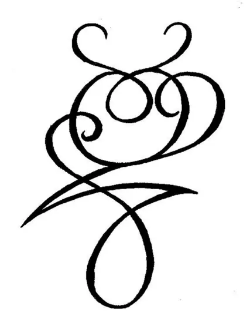
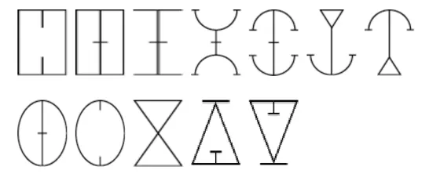
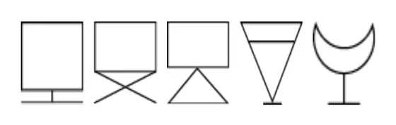
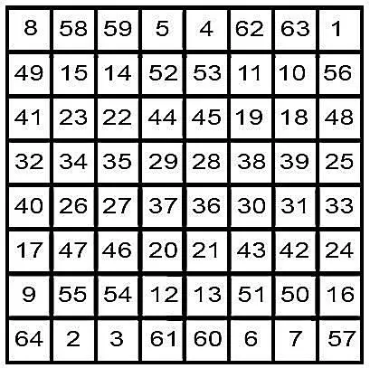
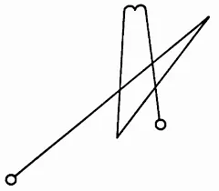
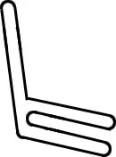

Astrology Grimoire
 Mercury
Mercury
Planetary Notes
Themes: Communication, knowledge, business, divination, business success, learning
Stones: Quartz, opal, Herkimer diamond, yellow calcite, yellow jasper
Herbs: Bergamot, caraway, cinnamon, dill, gum Arabic, gum mastic, horehound, lavender, marjoram, mullein, peppermint, star anise, savory, thyme
Greek Vowel Correspondences
- Epsilon (E) = EH
- Upsilon (Y) = EUW

The Planetary Seal of Mercury
The Most Elusive Seal
Of all the planetary seals, Mercury was the most difficult to capture. The visions revealed patterns existing in more than three or four dimensions, making translation into two dimensions extraordinarily challenging. After multiple attempts, some too jagged and lightning-like, others too fluid and lacking Mercury's characteristic speed and twistiness, the final design emerged. One practitioner described it as "like a high-powered technologically advanced microchip that makes the universe run more efficiently."
Powers of Mercury
Mercury governs thought, intellect, business, marketing, movement, intelligence gathering, science, theft, writing, games, and eloquence. Its energy is swift, multidimensional, and facilitates communication, learning, and the rapid exchange of information.
Mercury's Many Names
This same power appears across world traditions under different names: Hermes to the Greeks, Thoth to the Egyptians, Odin to the Scandinavians, and Woden to the early Anglo-Saxons, who called it Earendel, the Morning Star. Vodou names it Maitre Carrefour, Master of the Crossroads, also titled Psychopompos, Guide of Souls. Witches most often call on this power by the name Herne. Tradition holds that a witch should attune her deep mind to this power before any divination, commonly done by consecrating and using the Square of Mercury.
Applications of the Seal
The Mercury seal can be used in five primary ways:
Illumination: Enhance self-analysis and sharpen intellectual acuity. Use for deep thinking, learning, and mental clarity.
Financial: Facilitate the movement of money, manage checking accounts, and work with technology-based financial systems. Mercury excels at swift financial transactions.
Love: Cultivate wit, confidence, and humor to enhance attraction. While looks may capture initial attention, wit, confidence, and humor create lasting connection. Use with balance, avoid overdoing it.
Wrath: Cause stupidity, enable theft, and create confusion in adversaries. Mercury's swift, tricky nature can be directed toward disruption when necessary.
Healing: Address mental afflictions and support understanding of health and diet information. Mercury aids in processing complex health data and mental wellness.
Geomantic Characters of Mercury
Mercury rules two geomantic figures, each a conduit for the planet's swift, multidimensional energy. These characters can be inscribed on talismans, traced onto parchment, or carved into candles to sharpen intellect, speed communication, and open channels of cunning and eloquence.
From Conjunctio

From Albus

Magick Square of Mercury

For the traditional method of drawing, consecrating, and using this square before a divination, see Square of Mercury.
Ceremonial Planetary Seals of Mercury
In the ceremonial tradition, these sigils are arranged within a double-ringed circle. The Seal is positioned at the top center, the Intelligence beneath it, and the planetary symbol to one side or below for visual balance. Silver and tin are the traditional materials for inscribing Mercury's ceremonial seals. The Intelligence is regarded as benevolent in nature, while the Spirit is regarded as malevolent. For this reason, only the Seal and Intelligence are incorporated into ceremonial magick circles.
Seal of Mercury
Vehiel, Asboga, Din, Doni
Intelligence of Mercury
Tiriel

Spirit of Mercury
Cassiel, Taphthartharath

Kabbalistic Correspondence
- Ruling Angel: Raphael
- Universal function: Civilizing influence
- Spatial bearing: Center
- Operation of the spirit: Emotion and intuition